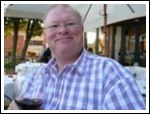

|
About the Presenters
 JP's, (Jürgen-Peter Börnig) dream of having his own English speaking radio show in the Netherlands came true in November 1998. He had former experience as a DJ and radio show presenter in his spare time while employed with the American Forces Network (AFN SHAPE) in Belgium. He adopted his initials JP as his disc jockey title at this time. He plays Squash, Badminton, loves Beach Volleyball, and swims to keep fit. He is also an avid Eurovision Song Contest fan. As an easy-going person with a great sense of humour, he is good fun and enjoys life to the full. JP's, (Jürgen-Peter Börnig) dream of having his own English speaking radio show in the Netherlands came true in November 1998. He had former experience as a DJ and radio show presenter in his spare time while employed with the American Forces Network (AFN SHAPE) in Belgium. He adopted his initials JP as his disc jockey title at this time. He plays Squash, Badminton, loves Beach Volleyball, and swims to keep fit. He is also an avid Eurovision Song Contest fan. As an easy-going person with a great sense of humour, he is good fun and enjoys life to the full.
Remote Members - Our Eurovision Song Contest Correspondents and Experts.
 Nathan Waddell lives in York, England and is a founding member of Eurovision news website escXtra.com and has contributed coverage of Melodifestivalen, amongst other news items, since its inception in 2011. His interest in the Eurovision Song Contest began when he stumbled across the show back in 2002. Since watching Jessica Garlick take the UK back up to the higher reaches of the table, the interest grew and grew. Coupled with studying French and Spanish at Aston University and an outside interest in European History and Politics, a love for Eurovision has blossomed from year to year. Nathan also founded Eurovision lyrics website 4lyrics.eu and will be studying abroad in 2014/15. He keeps us up to date with the latest Eurovision news on Radio International. Nathan Waddell lives in York, England and is a founding member of Eurovision news website escXtra.com and has contributed coverage of Melodifestivalen, amongst other news items, since its inception in 2011. His interest in the Eurovision Song Contest began when he stumbled across the show back in 2002. Since watching Jessica Garlick take the UK back up to the higher reaches of the table, the interest grew and grew. Coupled with studying French and Spanish at Aston University and an outside interest in European History and Politics, a love for Eurovision has blossomed from year to year. Nathan also founded Eurovision lyrics website 4lyrics.eu and will be studying abroad in 2014/15. He keeps us up to date with the latest Eurovision news on Radio International.
 Dermot Manning Dermot Manning is from Dublin, Ireland, the most
successful country in the history of the Eurovision Song Contest. He
studied law
in University and now practises as a Barrister. Dermot has watched the
Eurovision Song Contest every year since 1975. He went to the contest
for the
first time in Millstreet in 1993, and has been to 16 contests since. He
broadcasts for Irish Independent Radio at Eurovision. His most memorable
moments
at Eurovision were being in the audience in the Point Theatre in 1994
for
Riverdance, and meeting and hearing Severine sing "Un Banc, Un Arbre,
Une
Rue" in Athens in 2006, which is his all-time favourite Eurovision song.
Dermot's other great passion is travelling
Marcus Keppel-Palmer lives in Bristol, England and brings his own Eurovision slant to the show. A long term music fan, Marcus first watched the Eurovision back in 1970. His favourite winner is Severine's "Un Banc, Un Arbre, Une Rue". Any dream of actually entering Eurovision evaporated when his inability to hold a tune was discovered, although some might say that is no bar nowadays! He updates Radio International listeners on the latest eurovision news and gossip.
Chris Poppe lives in the Northampton in the UK and owes his love of music to having been the son of a publican because he was given the old records off the jukebox every week from the age of 5! A University graduate, he has had a variety of jobs from running a sandwich bar to maintaining the electoral register! He now sells antiquarian books. In his spare time he goes to the theatre, loves foreign travel and his infatuation with the Eurovision Song Contest grows stronger every year!You can visit Chris's Blog "The Real Chrisparkle" - here.
 Alasdair Rendall lives in London, although studied in Edinburgh and grew up in the small town of Bedford. He was always fascinated by songs in foreign languages and became addicted to the Eurovision Song Contest from an early age, watching every year since 1989. After graduating in Modern Languages and European Union Studies he qualified as a broadcast journalist, and now works in political journalism. The Eurovision Song Contest is without doubt the highlight of his year, and thinks the social aspect of Eurovision, meeting fans from all over the world, is just as important as the musical side of the contest. Alasdair Rendall lives in London, although studied in Edinburgh and grew up in the small town of Bedford. He was always fascinated by songs in foreign languages and became addicted to the Eurovision Song Contest from an early age, watching every year since 1989. After graduating in Modern Languages and European Union Studies he qualified as a broadcast journalist, and now works in political journalism. The Eurovision Song Contest is without doubt the highlight of his year, and thinks the social aspect of Eurovision, meeting fans from all over the world, is just as important as the musical side of the contest.
 David Mann born and raised in London, (I'm the same age as the number of Eurovision Contests), I moved out to East Anglia with my job around thirty years ago, and I now live in Wymondham, (pronounced Wind-um) a traditional small English market town about 12km from the historic city of Norwich. David Mann born and raised in London, (I'm the same age as the number of Eurovision Contests), I moved out to East Anglia with my job around thirty years ago, and I now live in Wymondham, (pronounced Wind-um) a traditional small English market town about 12km from the historic city of Norwich.
My earliest Eurovision memory is of hearing 'Sing Little Birdie' (UK 1959) played on 'Childrens Favourites' on the BBC Light Programme on the radio. I'm old enough to remember when Eurovision was BIG in the UK and even just seeing a live broadcast from a foreign country was a huge event. So much so that even the audiences wore evening dress back then - no flag waving, just polite applause! After so many years watching the show, it was the advent of the world wide web that was the catalyst to start taking a more serious interest, and I've been lucky enough to attend a couple of finals. the 50th Anniversary show in Copenhagen as well as Sweden's Melodifestivalen . Now, with the demise of BBC Television Centre, it's also time to look back 'fondly' at the countless hours spent queing in the cold and wet over the years to get in to see the various incarnations of the UK national selection shows!
I run the eurovision-norwich.info website and try to update my blog on a reasonably regular basis during the 'on' season, although it is primarily directed at the 'just generally interested' rather than the super-fan. The aim is to attempt to provide some insight into the madness of the entire Eurovision thing to all those non-believers!
 Michael Goodrich, our youngest member of the team, lives in the USA but do not let the location fool you. He is an avid fan of the Eurovision Song Contest and likes the contest for the fact that the music is different then in the US. He helps Radio International and the Hit Hunter by making jingles, show openers, medleys and much more. He loves to travel to different places and hopes that one day he will be able to travel Europe. In his spare time he likes play soccer, tennis, and golf. One of his biggest goals in life is to enter the Eurovision Song Contest as a singer and/or composer and since he can now enter the contest with breaking the age rule, he is already planning to go for this. Michael Goodrich, our youngest member of the team, lives in the USA but do not let the location fool you. He is an avid fan of the Eurovision Song Contest and likes the contest for the fact that the music is different then in the US. He helps Radio International and the Hit Hunter by making jingles, show openers, medleys and much more. He loves to travel to different places and hopes that one day he will be able to travel Europe. In his spare time he likes play soccer, tennis, and golf. One of his biggest goals in life is to enter the Eurovision Song Contest as a singer and/or composer and since he can now enter the contest with breaking the age rule, he is already planning to go for this.
 Lilian
Brunell has grown up in the Swedish-speaking part of Finland. Since
1985 she is living in Stockholm, Sweden. She has a university degree in
music science and has been playing the trumpet since an age of 9. By
co-incidence she started to work in the travel trade business but music
has always been a major interest. Lilian has been following the
Eurovision Song Contest since early days. To see Finland win with Lordi
2006 was as fantastic as when ABBA won for Sweden 1974. Another hobby is
travelling and by joining Eurovision finals it's always possible to end
up in unexpected, exciting places. For some years she maintains her own
Eurovision blog (www.lilianseurovision.blogspot.com
) and she also writes for various newspapers and web-sites. Lilian
Brunell has grown up in the Swedish-speaking part of Finland. Since
1985 she is living in Stockholm, Sweden. She has a university degree in
music science and has been playing the trumpet since an age of 9. By
co-incidence she started to work in the travel trade business but music
has always been a major interest. Lilian has been following the
Eurovision Song Contest since early days. To see Finland win with Lordi
2006 was as fantastic as when ABBA won for Sweden 1974. Another hobby is
travelling and by joining Eurovision finals it's always possible to end
up in unexpected, exciting places. For some years she maintains her own
Eurovision blog (www.lilianseurovision.blogspot.com
) and she also writes for various newspapers and web-sites.
 Eric Lehmann, native Luxembourger supplies Radio International with great interviews of Eurovision Performers and works closely with JP during the busy period of the Eurovision Song Contest and the National Selection in various European countries. Soon more to be published about Eric here. Stay tuned ! :) Eric Lehmann, native Luxembourger supplies Radio International with great interviews of Eurovision Performers and works closely with JP during the busy period of the Eurovision Song Contest and the National Selection in various European countries. Soon more to be published about Eric here. Stay tuned ! :)
 Stephen Boddington
is a British expat living in Brussels. He discovered the Eurovision
Song Contest in 1980 and was very disappointed when his parents told
him he had to wait a whole year for the next one. Still, it was worth
the wait as Bucks Fizz won the following year, a UK victory cementing a
passion that would grow to become a full-time hobby rather than
something that comes round just once a year. Travelling to various
national finals and fanclub conventions, he was frustrated at the lack
of detailed information about such events and decided to do something
about it, hence Radio International's Eurovision Calendar
was born! His other passion is birdwatching and he has travelled all
over the world seeing well over 1000 species as well as being a guide
for foreign birdwatchers visiting Belgium and the Netherlands. Stephen Boddington
is a British expat living in Brussels. He discovered the Eurovision
Song Contest in 1980 and was very disappointed when his parents told
him he had to wait a whole year for the next one. Still, it was worth
the wait as Bucks Fizz won the following year, a UK victory cementing a
passion that would grow to become a full-time hobby rather than
something that comes round just once a year. Travelling to various
national finals and fanclub conventions, he was frustrated at the lack
of detailed information about such events and decided to do something
about it, hence Radio International's Eurovision Calendar
was born! His other passion is birdwatching and he has travelled all
over the world seeing well over 1000 species as well as being a guide
for foreign birdwatchers visiting Belgium and the Netherlands.
 Helena Reuterwall joined our remote as substitute for Malcolm and Judy when interviewing Eurovision hopefuls on location. she was born and raised in Stockholm, Sweden where she still lives. She works in the research department at a Bio-pharmaceutical company. Helena keeps fit and spends as much time in the gym as possible. Not only does she work for Radio International at Eurovision locations, but is also a big fan of the E.S.Contest itself with a vast knowledge of the biggest music extravaganza there is. Helena Reuterwall joined our remote as substitute for Malcolm and Judy when interviewing Eurovision hopefuls on location. she was born and raised in Stockholm, Sweden where she still lives. She works in the research department at a Bio-pharmaceutical company. Helena keeps fit and spends as much time in the gym as possible. Not only does she work for Radio International at Eurovision locations, but is also a big fan of the E.S.Contest itself with a vast knowledge of the biggest music extravaganza there is.
|